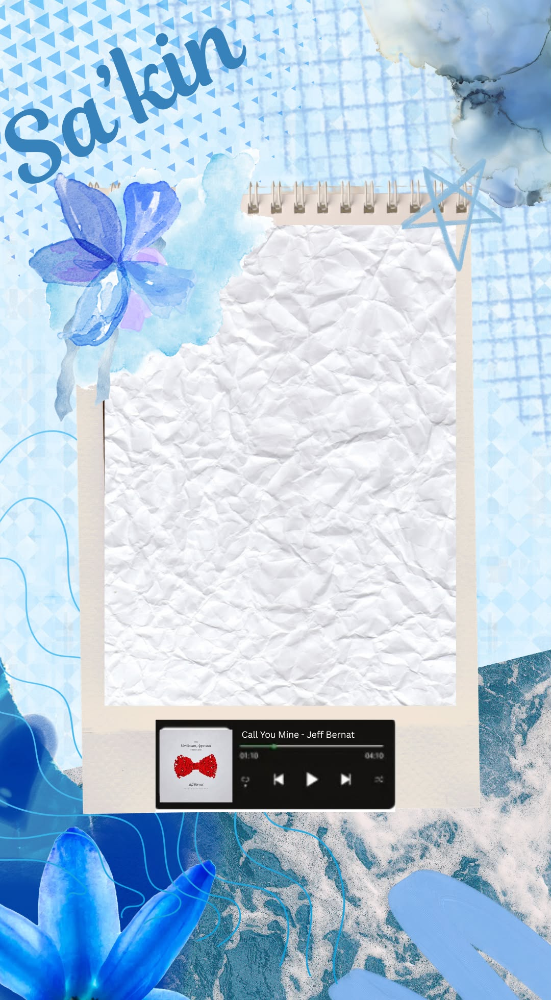

I wrote a letter for yah! Pero siyempre, patungkol muna sa'kin para fair 'di ba? Gusto la'ng kita bigyan ng thoughts na sa side ko lang ang may alam. Isa pa, ginawa ko itong website kasi unique and siguro it is one of the skill na mayroon akong mahirap makita sa iba. Though, perchance that for some people may not see this a lot. But still, I want to express my feelings in my own totality of will. So yeah, enjoy!
